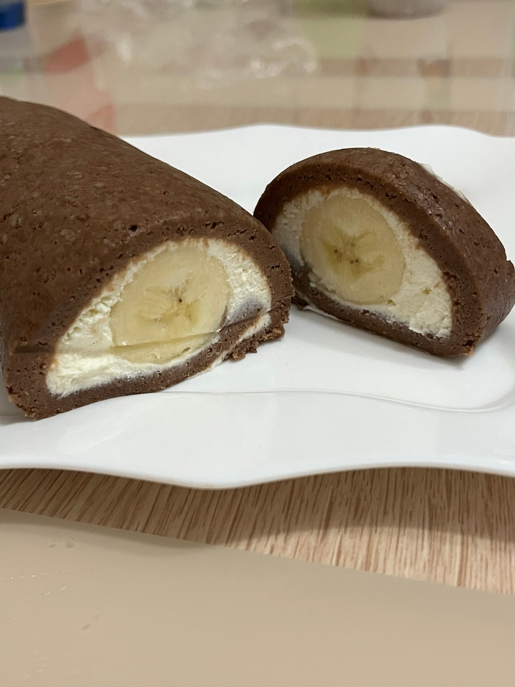

ТВОРОЖНО-БАНАНОВЫЙ РУЛЕТ
КБЖУ на 1 порцию - 370/40/8/39
Время приготовления - 2 часа
Сложность - легко
ИНГРИДИЕНТЫ НА 1 ПОРЦИЮ:
- Какао-порошок - 1 ст. ложка
- Банан - 2шт
- Песочное печенье (типа "Юбилейное") - 100гр
- Творог - 200гр
- Сливочное масло - 50шт
- Сахар - 1 ст. ложка
СПОСОБ ПРИГОТОВЛЕНИЯ:
Шаг 1:
Печенье измельчить в блендере или любым удобным для вас способом.
Шаг 2:
Бананы пюрировать блендером или размять вилкой.
Шаг 3:
К печенью добавить порошок какао и перемешать.
Шаг 4:
Добавить пюрированный банан и замесить пластичную однородную массу.
Шаг 5:
Творог (маскарпоне, филадельфия) соединить с сахаром и перемешать.
Шаг 6:
Рабочую поверхность выстелить пищевой плёнкой в два слоя. Раскатать на пленке прямоугольник из коричневой массы.
Шаг 7:
Ровным слоем нанести творожную массу на коричневый пласт, оставляя верхнюю часть на 2-3 см не смазанной.
Шаг 8:
Ещё один банан очистить и положить на край основы.
Шаг 9:
С помощью плёнки свернуть плотный рулет. Убрать рулет в холодильник, минимум, на два часа.
Готовый рулет можно посыпать сахарной пудрой. ПРИЯТНОГО АППЕТИТА!